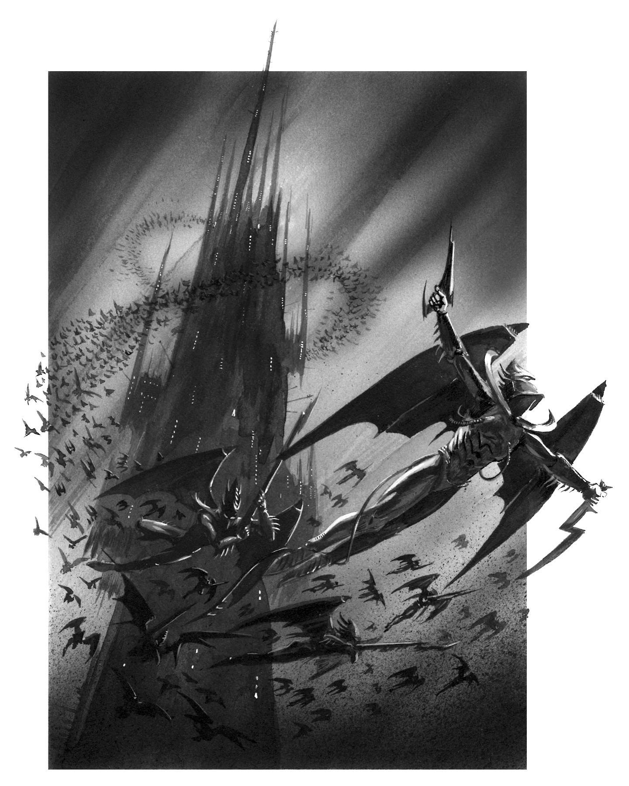

Scourges from Selene Spire
The Kabal of the Darklight Kites are the masters of the sky. Striking realspace from the ancient and decadant Drukhari city of Commorragh, utilizing aerial supremecy to raid the many worlds of a galaxy. Led by the Self-Proclaimed "Scourge King", Archon Celeanos rules with a taloned grip. His obsession with collecting all manner of unique treasures and specimines is well known, much like a bird collecting treasures for his nest. The Selene Spire is a mega voidship port that many other Kabals and Cults use to launch raid, making the Darklight Kites one of the most wealthy and elite Kabals in Commorragh.

Who are the Drukhari?
The Eldar race are long lived, lithe, and have pointed ears. They are an acient race that once ruled the galaxy for millenia until their empire fell to depravity. She Who Thirsts, the Chaos God Slannesh, was born as a result of their empire wide debauchery. Her birth scream tore a hole open in realspace, instantly killing the majority of the Aeldari empire and splitting the survivors into two major Factions, the Asuryani and the Drukhari. The Drukhari are the evil and sadistic survivors of the old empire. Ever since the birth of Slannesh, every Drukhari's soul has begun to slowly whither away. In order to survive, the Drukhari must feed on other souls least they become whithered husks. They are Dark Elf Vampires in Space.
The Kabal focuses on four methods of warfare
- Aerial Superiority
- Overwheling Heavyweapons Fire
- Elite Infantry
- Hordes of Hired Mercenaries